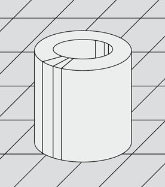

We’ve all see those little plastic, hollow cylinders that you arrange on the peg boards to later melt together to form some art work. It’s the sort of thing you see for young children. They go by many different names, pearls sometimes beads. One of the main manufacturers is a company called Hama. In Iceland, they seem to be the most common brand on the shelves.
This got me thinking a lot about basic pixel art. The grown-up use of these beads and peg boards is to revert to childhood 8-bit video game youth and re-create some of their favourite action characters. The problem in creating any of these characters is that you want some form of artsy authenticism. This requires you get the colours roughly correct.
The lack of good colour matching was the problem I wanted to solve when dealing with the beads. There plenty of companies making these beads, but we needed a way to match a given coloured bead to an RGB value, or more accurately; given an RGB colour, what bead did it closely match.
I wrote a very basic PHP program which loops through all the pixels in an image and fetches the RGB value. In return, it converts that to the closest bead colour from a list and creates both an SVG representation in the new colours, but also a shopping list of all colours and quantities of beads you’ll need to create it. The code to do this was very straight forward. I have posted Hama-Pixels on GitHub for anyone to use. There is a JSON list of all the bead colours, so if PHP isn’t your thing, you can easily use the hama.json as a data source and write your own creation code.
The problem with doing this is that you end-up with either a less than photo-realistic image due to the limited colours or some incredibly beautiful piece of art. I’ve spent plenty of tests in the image editor tweaking the colour balance so the final output is altered. Sometimes it is a feudal effort. Other times, I’ve gone into the hama.json and remove the colours I don’t have, therefore forcing the code to be limited in which other colours it can choose.
These tiny plastic beads are almost ubiquitous in house with children. So we wanted to use these as a potential tool in the creation of a piece of art. The beads are similar to single pixels and are laid-out in a grid form.
We’re no philatelist, but we do enjoy a beautiful stamp when we see one. Some of the best stamps Iceland produced were in the 01930s and 01940s. Using the 01940s 40 Aurar Stamp from Iceland as our source image we proceeded to create a 120 x 86 bead image. This required 10,320 beads to be placed onto the peg board according to the pixels in the image. In total, it took around 17 hours to complete. (We’re probably missing a few spent gathering beads from shops, etc) The results are certainly beautiful. We’re really happy with the results. Now to try and frame it in the office.
A short timelapse of the first few rows being placed from the center outward.

The beads are all aligned, with everything back-to-front so what is facing you will become the backside after being ironed together.

The finished product after some cooling. There is warping, but nothing a frame can’t solve.

Hanging on the wall in all its glory. From a distance it looks nice.
For future projects we’ll probably avoid any text. The bead colours don’t lend themselves to aliasing very well and with letters and numbers you are trying to form the right shape. With more abstract objects it works much better.